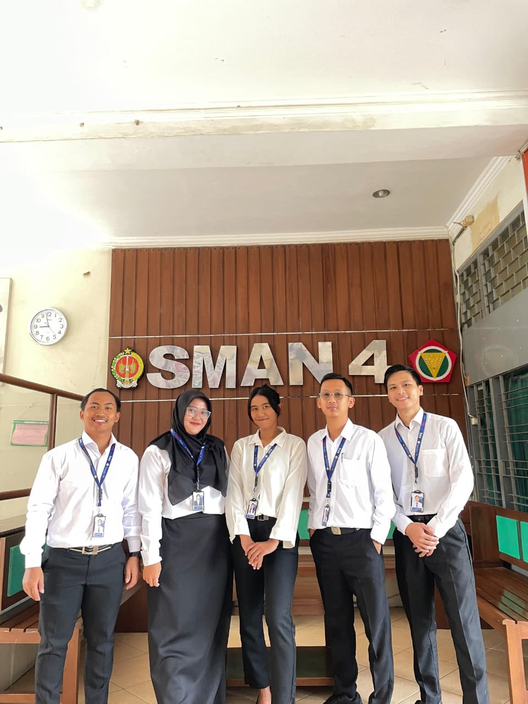
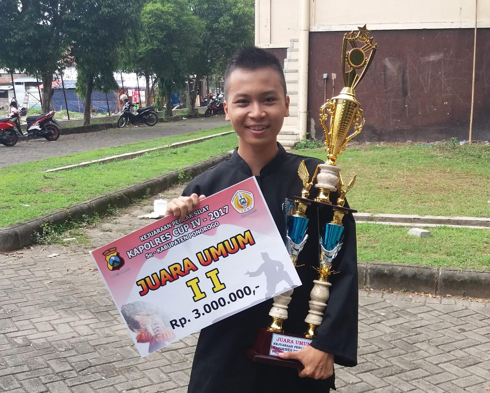

Kegiatan Non-Mengajar
Dokumentasi kontribusi aktif mahasiswa PPG Prajabatan PJOK dalam ekosistem persekolahan di SMAN 4 Yogyakarta. Meliputi pelaksanaan piket kantor dan ketertiban sekolah, pengawasan Asesmen Sumatif Tengah Semester (ASTS), serta kepanitiaan Semarak Lomba Kemerdekaan 12 Agustus.
1. Piket Kantor & Pelayanan Administrasi Sekolah
Kategori: Manajerial Sekolah & Kedisiplinan • Pelaksanaan: Terjadwal Berkala PPL 2Uraian Pelaksanaan Kegiatan
Sebagai bagian integral dari penugasan non-mengajar PPL 2 di SMAN 4 Yogyakarta, saya melaksanakan tugas piket kantor dan lobi sekolah. Kegiatan ini bertujuan mendukung kelancaran operasional administrasi sekolah, menjembatani komunikasi dengan wali murid dan tamu dinas, serta mengawal ketertiban siswa selama jam kegiatan belajar mengajar berlangsung.
Peran & Tanggung Jawab Utama
- Penerimaan Tamu Sekolah: Menyambut, mencatat buku tamu kedinasan, orang tua murid, serta mengarahkan ke bagian kepala sekolah, humas, atau guru yang bersangkutan dengan ramah dan santun.
- Penertiban Presensi & Izin Masuk/Keluar: Menangani peserta didik yang terlambat, memeriksa alasan kedatangan, memberikan kartu disposisi izin masuk kelas, serta mencatat siswa yang izin meninggalkan sekolah karena sakit atau urusan mendesak.
- Pendampingan Kelas Pengganti (*Guru Inval*): Mendampingi kelas yang gurunya berhalangan hadir untuk memberikan tugas atau memastikan suasana belajar mandiri tetap kondusif dan tertib.
- Pusat Informasi & Komunikasi Cepat: Menyampaikan pengumuman penting sekolah melalui pengeras suara sentral dan membantu pengarsipan dokumen surat masuk/keluar.
Refleksi Pengembangan Kompetensi Guru:
Tugas piket kantor memperkuat Kompetensi Kepribadian (kedisiplinan, integritas, keramahan) dan Kompetensi Sosial guru dalam memahami alur manajerial persekolahan, membangun empati terhadap siswa yang menghadapi masalah di rumah, serta menjalin kerja sama harmonis dengan tenaga kependidikan (TU dan staf keamanan).



2. Mengawas Ujian ASTS (Asesmen Sumatif Tengah Semester)
Kategori: Evaluasi Akademik & Tata Tertib • Pelaksanaan: Pekan Ujian ASTS Semester GanjilUraian Pelaksanaan Kegiatan
Dalam penyelenggaraan Asesmen Sumatif Tengah Semester (ASTS), saya ditugaskan oleh pihak kurikulum sekolah sebagai pengawas ruang ujian. Tugas ini menuntut ketelitian tinggi, objektivitas, serta kemampuan menciptakan suasana ruang ujian yang tenang, adil, dan menjunjung tinggi nilai kejujuran akademik.
Peran & Tanggung Jawab Utama
- Sterilisasi & Pengkondisian Ruang: Memastikan denah duduk siswa sesuai nomor ujian, papan tulis bersih, serta tas dan telepon genggam terkumpul rapi di bagian depan kelas.
- Pembacaan Tata Tertib & Verifikasi Peserta: Membacakan tata tertib resmi ASTS, memeriksa kesesuaian kartu peserta ujian dengan lembar presensi, dan membagikan naskah soal/token digital tepat waktu.
- Pengawasan Kepatuhan Akademik: Berkeliling secara berkala untuk mencegah praktik kecurangan, mengawasi kepatuhan durasi pengerjaan, serta melayani pertanyaan administratif siswa secara netral.
- Pemberkasan & Berita Acara Ujian: Menghitung kelengkapan lembar jawab, mengisi dan menandatangani Berita Acara Pelaksanaan Asesmen, serta menyerahkan berkas ke sekretariat panitia ASTS.
Refleksi Pengembangan Kompetensi Guru:
Pengalaman mengawas ASTS melatih Kompetensi Pedagogik dalam memahami alur asesmen sumatif terstandar, serta menumbuhkan ketegasan humanis guru dalam mendidik karakter integritas, kejujuran, dan kemandirian siswa sejak dini.


3. Panitia Kegiatan Lomba 12 Agustus (HUT Kemerdekaan RI)
Kategori: Kepanitiaan Event & Olahraga Rekreasi • Pelaksanaan: 12 AgustusUraian Pelaksanaan Kegiatan
Dalam rangka memperingati Hari Ulang Tahun Kemerdekaan Republik Indonesia, SMAN 4 Yogyakarta menyelenggarakan rangkaian perlombaan kebersamaan pada tanggal 12 Agustus. Saya dipercaya menjadi bagian dari panitia pelaksana sekaligus koordinator lapangan untuk mengelola pertandingan olahraga rekreasi dan ketangkasan tradisional antar kelas.
Peran & Tanggung Jawab Utama
- Perancangan Teknis Perlombaan: Menyusun petunjuk teknis (*technical guidelines*) dan bagan pertandingan untuk cabang lomba (voli terpal air, estafet balap karung helm, tarik tambang, dan estafet ketangkasan).
- Penyusunan Sarana & Keamanan Lapangan: Mengatur layout lapangan pertandingan, memastikan ketersediaan batas garis aman, serta menginspeksi peralatan lomba agar tidak mencederai peserta.
- Wasit & Juri Pertandingan Lapangan: Memimpin jalannya perlombaan sebagai wasit utama, menegakkan peraturan secara adil dan tegas, serta meredakan potensi gesekan suporter antar kelas.
- Rekapitulasi Poin & Seremoni Apresiasi: Mencatat hasil kemenangan setiap babak, menentukan juara umum lomba kemerdekaan, serta membantu jalannya penganugerahan piala dan hadiah.
Refleksi Pengembangan Kompetensi Guru:
Sebagai calon guru PJOK, kegiatan kepanitiaan ini menjadi wadah konkret mengaplikasikan Manajemen Penyelenggaraan Pertandingan Olahraga, kepemimpinan lapangan (*field leadership*), mitigasi keselamatan, serta mempererat hubungan emosional yang hangat dengan seluruh warga sekolah.

